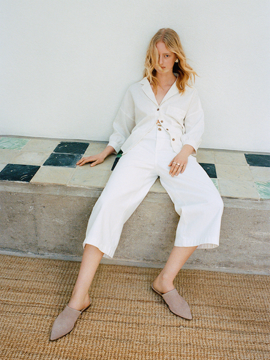

Boho, retro, rave. Cea mai recenta colectie Reserved din denim se inspira din eleganta trecutului, dar se reduce in ansamblu la un efect de perspectiva.
Au trecut 150 de ani de la aparitia blugilor si mai bine de o jumatate de secol de cand Diana Vreeland,
editor de moda celebru, a declarat:
'Blugii sunt cele mai frumoase lucruri de la inventarea gondolei'.
Astazi, denimul continua sa domine podiumurile de moda si strazile si este elementul cheie al noii colectii Reserved.
Urmarind tendintele globale de streetwear, designerii Reserved s-au inspirat din istoria modei.
Bazandu-se pe diverse estetici si subculturi din trecut, acestia creeaza o colectie moderna, cu multe referinte la anii '70 si '90.
Desi eclectica, noua colec?ie este, în mod cert, armonioasa in ceea ce priveste stilul.
